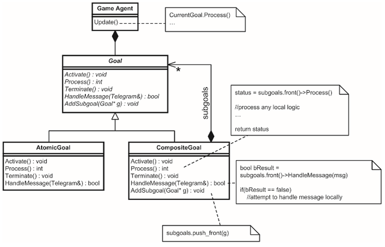

Raven
Overview
Raven is a top down 2D game, similar to a Quake-style deathmatch. It is originaly made by Mat Bucklandin his book, "Programming Game AI By Example". This application has been completed for a school project at the Université du Québec à Chicoutimi (UQAC). The course is the following : Artificial Intelligence for Video Games (8IAR125).
The gameplay of Raven is similar of a Quake-style deathmatch. When starting the game, severals bots spawned controlled by similar AI trying to win, by killing as many bots as possible. Bots can also pick up health or weapons if needed. The player could also take control of a bot by clicking on it. Ones the bot is controlled, some actions were possible like firing, switching weapons, etc.
Project Goals
- Learn and apply AI techniques used in video games.
- Try making a neural network to train an AI.
- Improved the game by adding more modes (team deathmatch, 1vs1)
- Improved the game by adding more features (weapons, maps, ...).
Screenshots
Detailed Info
All the below techniques were already in the game or added by the team into Raven.
The final goal was to make bots behave like human as much as possible and create the illusion to playing against thinking humans.
Added Features
- A human player and custom controls (ZQSD movement with mouse scroll to switch weapons).
- Introduce "fuzzy logic" to bots.
- New weapon in the game : a grenade.
- Introduce a learning bot (create neural network and train it with game data).
- Two new modes : team deathmatch and Duel mode (1vs1).
- Three Bot behaviors for duel mode ("Burnhead", "Coward" and "Weapon Collector").
- Add a new map.
IA techniques
Goal-Driven Agent Behavior
In this application Mat Buckland decided to add a "brain" to each bots in the game. This brain used goal-driven behavior to tell the bot what he should do right now based on game entries.
• Goal decomposition
This process works just like the human brain : if you want to achieve something, you will decomposed this goal into many sub-goals easier to make archieve than the first one. And if it's not enough yet, keep doing this until sub-goals granularity are simple enough to be code by a function or a line of code. This can be done with the composite design pattern like the picture shows.
We can noticed that goals have three methods :
- Activate()
- · Process()
- · Terminate()
• Goals arbitration
Once we know how to achieve each goal, we need to choose between available goals. To do so, a score is given to each goal for each update. This score is calculated with Desirability functions that take many game parameters in account and standardized to be in the range 0 (Low Desitability) to 1 (High Desirability). The goal with the highest desirability is chose to be the next goal.
In addition, a memory has been add to be able to stop a current goal, make some actions and resume the previous main goal.
Fuzzy Logic
Fuzzy logic were also introduced to make bots choose their weapons based on the game context. Fuzzy logic is initially used to put values on vague linguistic terms like "small amount", "slightly", etc.
Thanks to Bayesian statistics and probabilities, we can defined a fuzzy set that describe the desirability of a weapon based on a specific parameter. By adding fuzzy rules to it, we will be able to compute the final value which will tell the bot, based on a final fuzzy set, which weapon is the best right now.
Neural Network
Finally, we implemented a neural network in this application to let a bot learned how to shoot. To do so, we used a multi-layer perceptron (MLP) and train it "to shoot or not" with specific inputs. Those inputs were the following :
- Is the ennemy visible ? (0 or 1)
- Does the ennemy has maximum health ? (0 or 1)
- Does the learning bot has his maximum health ?
- The current weapon of the learning bot (6 through 9)
- Does the distance ennemy-learning bot is less than 200 pixels ? (0 or 1)
The final results were correct since the learning bot shoot at the other bots. We even noticed that his score were slightly higher than the average.